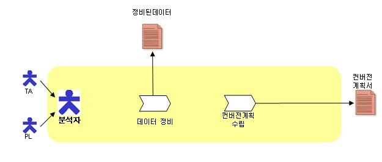

| Concept: 컨버전분석활동 개요 |
 |
|
1. 개요 (Overview)
2. 수행 공정(Task)
3. 공정/산출물/역할간의 관계(Process, Deliverables & Role Relationship)  4. 테일러링 가이드(Tailoring Guide) 4.1 컨버전을 고객이 주체가 되어 수행하며, 프로젝트 업무 범위에 포함되지 않은 경우에는 컨버전 분석 액티비티는 생략해도 좋다. 4.2 신규 시스템을 구축하여 컨버전 대상이 존재하지 않을 때에는 컨버전 분석 액티비티는 생략해도 좋다. 4.3 기존 시스템의 모든 오류데이터에 대해 데이터 정비를 수행해야 하는 것은 아니고, 고객과 협의하여 범위를 정한다. 4.4 컨버전 대상 및 범위는 기존 시스템 또는 신 시스템의 물리적인 테이블 또는 데이터 단위로 정한다. 신 시스템의 데이터 모델링이 완료되지 않아 신 시스템을 기준으로 정의 할 수 없는 경우에는 기존 시스템의 데이터를 기준으로 정의하여도 된다. 5. 고려사항(Considerations) 5.1 기존 데이터의 정합성을 체크하기 위한 체크리스트는 가급적 고객이 작성하는 것이 품질이 높으며, 대안으로 분석자가 고객의 도움을 받아서 작성한다. 5.2 오류데이터의 수정은 우선순위를 두어서 한정된 일정과 자원을 효율적으로 활용해야 한다. 데이터 정비를 수행하는 과정에서 예기치 못한 상황이 발생하여 예상보다 많은 시간과 자원이 소요되는 경우가 발생할 수 있기 때문에 반드시 우선순위를 정의하고 작업을 해야 한다. 5.3 컨버전 전략은 컨버전 대상의 범위, 아키텍처, 정비데이터의 종류 및 양, 시스템 전환 일정 등의 다양한 요소를 고려하여 도출한다. 5.4 오류데이터에 대한 정비를 수행하였다 하더라도 원인이 되는 기존 시스템의 프로그램을 수정하지 않았다면 컨버전을 수행하면서 오류데이터가 발생할 수 있으므로 오류데이터 발생시의 처리 절차를 계획에 포함시켜야 한다. |